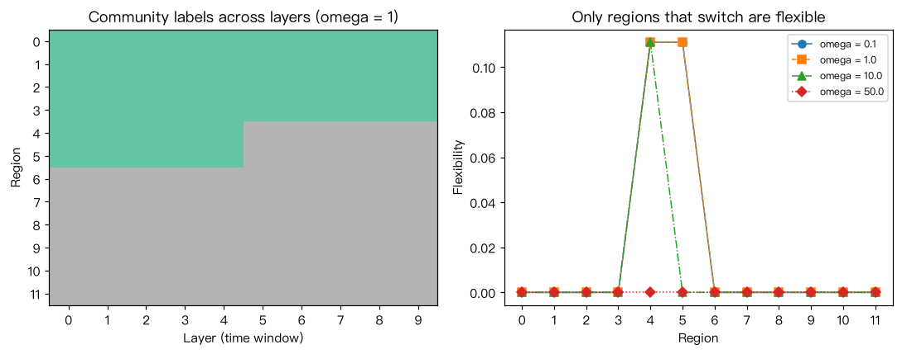

Example09 / 11
多层模块度与网络灵活性
时间多层网络：12 个脑区、10 层（时间窗）。前 5 层模块为 {0–5}、{6–11}；后 5 层中脑区 4、5 换到第二个模块。 构造超模块度矩阵 B（层内 A − γ k kᵀ/2m，层间同一脑区相连、权重 ω）， 用一个简化的“局部移动”启发式（Louvain 第一阶段）最大化 Q，再计算每个脑区的灵活性 （相邻层间改变模块归属的次数 / (层数 − 1)）。 输出解读：在中小的 ω 下，只有换模块的脑区 4、5 灵活性非零（1 次变化 / 9 个相邻层对 ≈ 0.11）； ω 增大到 10 时只剩脑区 4 仍会切换，ω = 50 时层间耦合压倒层内结构，所有脑区被“冻结”，灵活性全为 0。 灵活性的数值依赖 ω 和 γ，研究中应在参数网格上报告。 不同随机种子得到的 Q 不同（模块度优化的简并性），所以要多次运行；实际研究用 GenLouvain 等实现， 并对多次运行取共识、与置换零模型比较。
Output输出图

Output文字输出
ω = 0.1：10 次运行 Q 范围 0.330–0.330，最优解社团数 = 2，灵活性 = [0.0, 0.0, 0.0, 0.0, 0.11, 0.11, 0.0, 0.0, 0.0, 0.0, 0.0, 0.0] ω = 1.0：10 次运行 Q 范围 0.440–0.477，最优解社团数 = 2，灵活性 = [0.0, 0.0, 0.0, 0.0, 0.11, 0.11, 0.0, 0.0, 0.0, 0.0, 0.0, 0.0] ω = 10.0：10 次运行 Q 范围 0.824–0.825，最优解社团数 = 2，灵活性 = [0.0, 0.0, 0.0, 0.0, 0.11, 0.0, 0.0, 0.0, 0.0, 0.0, 0.0, 0.0] ω = 50.0：10 次运行 Q 范围 0.957–0.957，最优解社团数 = 2，灵活性 = [0.0, 0.0, 0.0, 0.0, 0.0, 0.0, 0.0, 0.0, 0.0, 0.0, 0.0, 0.0]
Code代码
# 时间多层网络：12 个脑区、10 层（时间窗）。前 5 层模块为 {0–5}、{6–11}；后 5 层中脑区 4、5 换到第二个模块。
# 构造超模块度矩阵 B（层内 A − γ k kᵀ/2m，层间同一脑区相连、权重 ω），
# 用一个简化的“局部移动”启发式（Louvain 第一阶段）最大化 Q，再计算每个脑区的灵活性
# （相邻层间改变模块归属的次数 / (层数 − 1)）。
# 输出解读：在中小的 ω 下，只有换模块的脑区 4、5 灵活性非零（1 次变化 / 9 个相邻层对 ≈ 0.11）；
# ω 增大到 10 时只剩脑区 4 仍会切换，ω = 50 时层间耦合压倒层内结构，所有脑区被“冻结”，灵活性全为 0。
# 灵活性的数值依赖 ω 和 γ，研究中应在参数网格上报告。
# 不同随机种子得到的 Q 不同（模块度优化的简并性），所以要多次运行；实际研究用 GenLouvain 等实现，
# 并对多次运行取共识、与置换零模型比较。
import numpy as np
rng = np.random.default_rng(2)
N, L = 12, 10
def layer_adj(groups):
A = rng.uniform(0, 0.2, (N, N))
for g in groups:
for i in g:
for j in g:
A[i, j] += rng.uniform(0.6, 1.0)
A = (A + A.T) / 2
np.fill_diagonal(A, 0)
return A
layers = [layer_adj([range(0, 6), range(6, 12)]) for _ in range(5)] + \
[layer_adj([range(0, 4), range(4, 12)]) for _ in range(5)]
def supra_B(layers, gamma, omega):
B = np.zeros((N * L, N * L))
for l, A in enumerate(layers):
k = A.sum(1); m2 = k.sum()
B[l * N:(l + 1) * N, l * N:(l + 1) * N] = A - gamma * np.outer(k, k) / m2
for l in range(L - 1): # 有序耦合：只连相邻层
for i in range(N):
B[l * N + i, (l + 1) * N + i] = B[(l + 1) * N + i, l * N + i] = omega
return B
def local_moving(B, seed=0, n_pass=50):
"""Louvain 第一阶段：逐个节点移到使 Q 增量最大的社团，直到不再移动。"""
r = np.random.default_rng(seed)
n = B.shape[0]
g = np.arange(n)
for _ in range(n_pass):
moved = False
for v in r.permutation(n):
comms = np.unique(g)
score = np.array([B[v, g == c].sum() - (B[v, v] if g[v] == c else 0) for c in comms])
best = comms[score.argmax()]
if best != g[v] and score.max() > score[comms == g[v]][0] + 1e-12:
g[v] = best; moved = True
if not moved:
break
return np.unique(g, return_inverse=True)[1]
def louvain_B(B, seed=0):
"""对任意模块度矩阵 B 做 Louvain：局部移动 + 聚合，重复至收敛。"""
member = np.arange(B.shape[0])
Bc = B.copy()
while True:
g = local_moving(Bc, seed)
if g.max() + 1 == Bc.shape[0]:
return member
member = g[member]
P = np.eye(g.max() + 1)[g] # (旧节点数, 新节点数) 指示矩阵
Bc = P.T @ Bc @ P
def flexibility(g):
G = g.reshape(L, N)
return (G[1:] != G[:-1]).sum(0) / (L - 1)
def quality(B, g, two_mu):
return B[g[:, None] == g[None, :]].sum() / two_mu
two_m = sum(A.sum() for A in layers)
best_g = [] # 记录各 ω 的最优划分，供作图
for omega in [0.1, 1.0, 10.0, 50.0]:
B = supra_B(layers, gamma=1.0, omega=omega)
two_mu = two_m + 2 * omega * N * (L - 1)
runs = [louvain_B(B, seed=s) for s in range(10)] # 启发式有随机性：多次运行
Qs = [quality(B, g, two_mu) for g in runs]
g = runs[int(np.argmax(Qs))]
best_g.append(g)
print(f"ω = {omega}：10 次运行 Q 范围 {min(Qs):.3f}–{max(Qs):.3f}，最优解社团数 = {g.max() + 1}，"
f"灵活性 = {flexibility(g).round(2).tolist()}")
import matplotlib.pyplot as plt
fig, axes = plt.subplots(1, 2, figsize=(10, 4))
axes[0].imshow(best_g[1].reshape(L, N).T, cmap="Set2", aspect="auto", interpolation="nearest")
axes[0].set(xlabel="Layer (time window)", ylabel="Region", xticks=range(L), yticks=range(N),
title="Community labels across layers (omega = 1)")
for g, om, mk, ls in zip(best_g, [0.1, 1.0, 10.0, 50.0], "os^D", ["-", "--", "-.", ":"]):
axes[1].plot(range(N), flexibility(g), marker=mk, ls=ls, lw=1, label=f"omega = {om}")
axes[1].set(xlabel="Region", ylabel="Flexibility", xticks=range(N), title="Only regions that switch are flexible")
axes[1].legend(fontsize=8)
plt.tight_layout(); plt.show()Run在浏览器中运行
首次加载 Python 环境约需 20–40 秒；可以修改参数后重新运行。